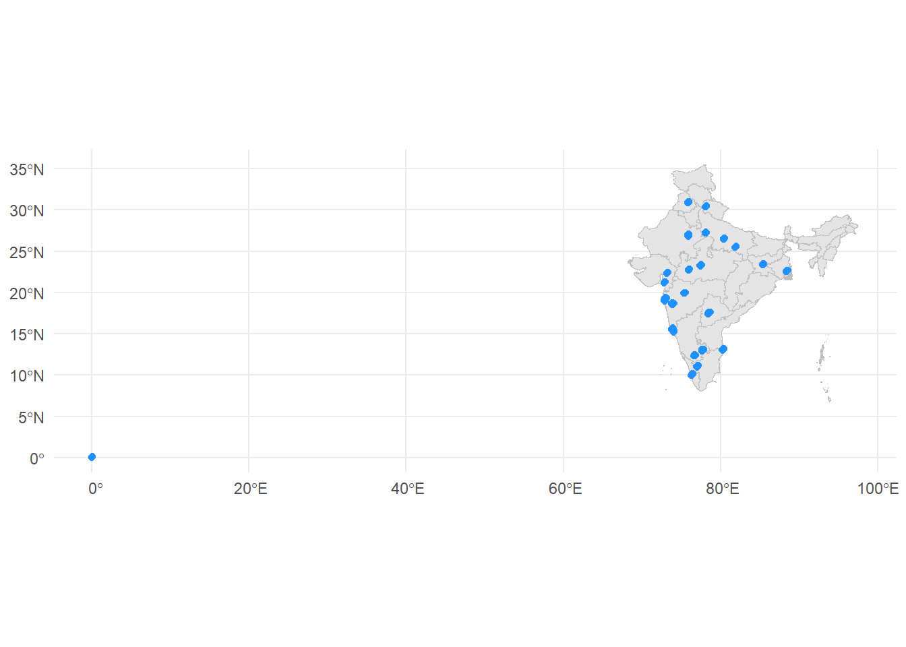
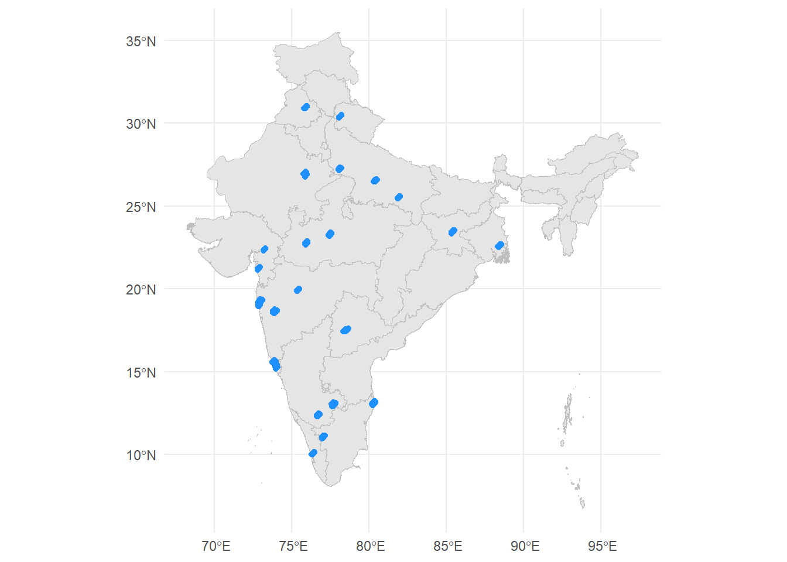
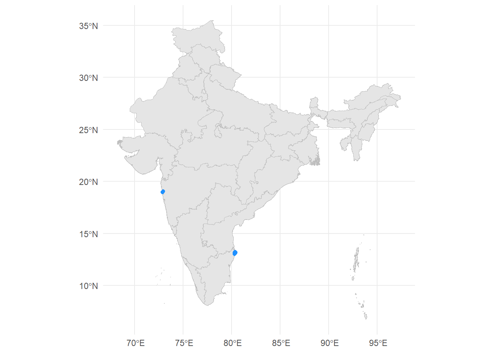
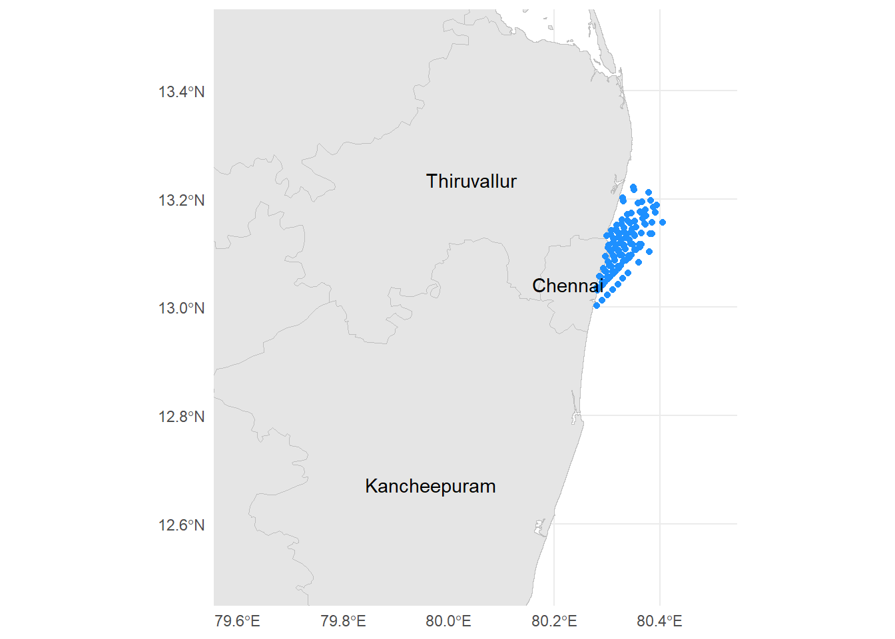
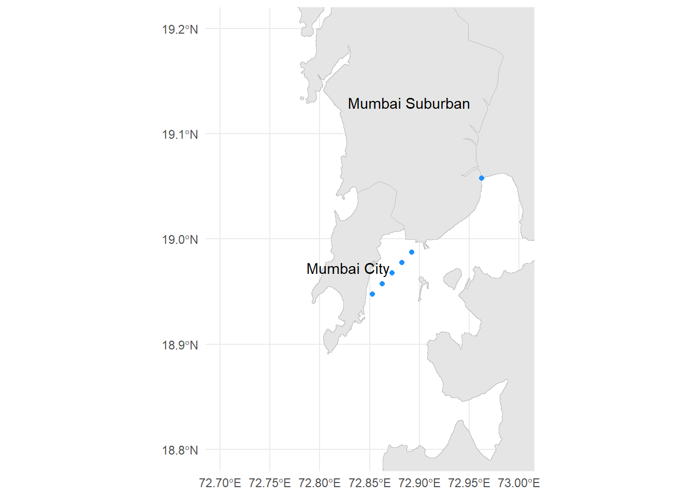

Reverse Geocoding: Acquiring Address from Location Coordinates
Introduction
Geocoding is the process of converting addresses into geographic coordinates (latitude and longitude). You see their familiar form whenever you search for your local restaurant or place to visit. There is also something called Reverse Geocoding where you want to convert latitude and longitude into readable addresses. Both are equally important, especially for industries related to moving goods or people, e.g. food delivery service or taxi service. Reverse geocoding is essential if you want to understand the underlying pattern of customer behavior. For example, as a food delivery service or a food merchant offers or partners with a delivery service, you want to know where most of your customers are located based on their delivery addresses.
There are several alternatives to do reverse geocoding. In this post we will explore 2 options on doing reverse geocoding and see their pros and cons:
- Using API via
tidygeocoderpackage - Using shapefile map data
All source code and dataset for this article are provided on my github repo.
Library
The following are the required packages that will be used throughout the article. It consists of packages for data wrangling, clustering, and data visualization.
Data Understanding
We will use data from Food Delivery Dataset acquired from Kaggle. A quick sampling of the address coordinates inform me that the delivery service is located in India. The following is the description about the data.
Food delivery is a courier service in which a restaurant, store, or independent food-delivery company delivers food to a customer. An order is typically made either through a restaurant or grocer’s website or mobile app, or through a food ordering company. The delivered items can include entrees, sides, drinks, desserts, or grocery items and are typically delivered in boxes or bags. The delivery person will normally drive a car, but in bigger cities where homes and restaurants are closer together, they may use bikes or motorized scooters.
Read Data
First we will read and inspect the delivery data.
Code
Rows: 45,593
Columns: 20
$ id <chr> "0x4607", "0xb379", "0x5d6d", "0x7a6a", "0…
$ delivery_person_id <chr> "INDORES13DEL02", "BANGRES18DEL02", "BANGR…
$ delivery_person_age <dbl> 37, 34, 23, 38, 32, 22, 33, 35, 22, 36, 21…
$ delivery_person_ratings <dbl> 4.9, 4.5, 4.4, 4.7, 4.6, 4.8, 4.7, 4.6, 4.…
$ restaurant_latitude <dbl> 22.74505, 12.91304, 12.91426, 11.00367, 12…
$ restaurant_longitude <dbl> 75.89247, 77.68324, 77.67840, 76.97649, 80…
$ delivery_location_latitude <dbl> 22.76505, 13.04304, 12.92426, 11.05367, 13…
$ delivery_location_longitude <dbl> 75.91247, 77.81324, 77.68840, 77.02649, 80…
$ order_date <chr> "19-03-2022", "25-03-2022", "19-03-2022", …
$ time_orderd <chr> "11:30:00", "19:45:00", "08:30:00", "18:00…
$ time_order_picked <time> 11:45:00, 19:50:00, 08:45:00, 18:10:00, 1…
$ weatherconditions <chr> "conditions Sunny", "conditions Stormy", "…
$ road_traffic_density <chr> "High", "Jam", "Low", "Medium", "High", "J…
$ vehicle_condition <dbl> 2, 2, 0, 0, 1, 0, 1, 2, 0, 2, 1, 1, 0, 1, …
$ type_of_order <chr> "Snack", "Snack", "Drinks", "Buffet", "Sna…
$ type_of_vehicle <chr> "motorcycle", "scooter", "motorcycle", "mo…
$ multiple_deliveries <dbl> 0, 1, 1, 1, 1, 1, 1, 1, 1, 3, 1, 1, 0, 1, …
$ festival <chr> "No", "No", "No", "No", "No", "No", "No", …
$ city <chr> "Urban", "Metropolitian", "Urban", "Metrop…
$ time_taken_min <chr> "(min) 24", "(min) 33", "(min) 26", "(min)…Data Description:
id: The order iddelivery_person_id: The id of the delivery persondelivery_person_id: The age of the delivery persondelivery_person_ratings: The overall performance rating of the delivery personrestautrant_latitude: Latitude coordinate of the restaurantrestautrant_longitude: Longitude coordinate of the restaurantdelivery_location_latitude: Latitude coordinate of the delivery locationdelivery_location_longitude: Longitude coordinate of the delivery locationorder_date: Longitude coordinate of the delivery locationtime_orderd: Time of the delivery ordertime_order_picked: Time the delivery is picked by the delivery personweatherconditions: The weather condition during delivery processroad_traffic_density: The traffic density during delivery processvehicle_condition: The condition of the vehicletype_of_order: Type of the order (Snacks, Drinks, Buffet, Meal)type_of_vehicle: Type of the vehiclemultiple_deliveries: Flagging code of multiple deliveries statusfestival: Flagging if the delivery happened during festivalcity: The category of the city (Urban, Metropolitan, Semi-Urban)time_taken_min: Duration of deliveries
Inspect Data
Let’s first check if the data has duplicated order id. If there are more than one observation for an order id we may want to inspect the data further.
There is no duplicated order id. Next we check the summary of the data to see if there is anything unusual, especially for the delivery location coordinates.
delivery_location_latitude delivery_location_longitude
Min. : 0.01 Min. : 0.01
1st Qu.:12.99 1st Qu.:73.28
Median :18.63 Median :76.00
Mean :17.47 Mean :70.85
3rd Qu.:22.79 3rd Qu.:78.11
Max. :31.05 Max. :88.56 Based on the summary, there may some data with weird coordinates that has close to 0 latitude and 0 longitude (if you search them, it is located on the west side of Africa). We will try to visualize all of the data to better see the distribution of the delivery locations.
Visualize Geospatial Data
Shapefile Data
To have clear visualization of a geospatial data, we will need a shapefile that consists of polygons that represent the line border of a country or a region. We will use the Indian map data acquired from GADM. You can download the shapefile format and unzip them. The shapefile of the India country will give you several layers of border comprising of the national border, the state border, and go more detailed into city or regional border.
The following code will read the layer 1 or the state level border using the st_read() function from the sf package.
Data Visualization
To visualize the spatial data, we simply use the ggplot package. The geom_sf() will draw the map borders while the geom_point() show all of the delivery locations.
Code

Based on the plot, we can see that anomalies only happen at the coordinates around 0 latitude and 0 longitude, let’s check these further.
Code
Number of anomalies: 3640 delivery_location_latitude delivery_location_longitude
Min. :0.01000 Min. :0.01000
1st Qu.:0.03000 1st Qu.:0.03000
Median :0.06000 Median :0.06000
Mean :0.06302 Mean :0.06302
3rd Qu.:0.09000 3rd Qu.:0.09000
Max. :0.13000 Max. :0.13000 There are around 3600 rows with anomaly location. Perhaps this was a faulty location where the system failed to properly locate the customer location. We can get rid of them for now.
Let’s redraw our map.
Code

Here we can see that the customers are concentrated into certain areas. We want to know the name of the area, perhaps in a region or even district level using reverse geocoding.
Reverse Geocoding
Reverse geocoding can be achieved using 2 methods:
- Online method with API via
tidygeocoderpackage - Offline method with shapefile map data
Online method with tidygeocoder
Online method require us to connect with the API from a geocoding service. The tidygeocoder package make it easier for us to connect the API and do the geocoding process. The list of the geocoding service covered by the package can be accessed here.
The online method is a great alternative if you want the correct and proper address based on up to date data. However, it has a drawback to consider. Since we are using API access, we rely on the API usage rate limit and some services require us to create an API key beforehand. The following is the example of using the Nominatim service with the Open Street Map data to reverse geocode the first 10 rows of our delivery data.
Code
Passing 10 coordinates to the Nominatim single coordinate geocoderQuery completed in: 10.2 secondsTime difference of 10.16572 secsThe API will return a column named address that give you detailed address for each coordinate.
Code
The Nominatim service has the API rate limit of 1 query per second, meaning that each row will take 1 second to process. Since we have more than 40 thousand rows, the process will take forever to finish. Therefore, if you want to use the API, you may need some strategy like using multiple devices or batch processing to speed up the process. You can the discussion related to this topic here
Offline Method Using the Shapefile
Spatial Filter
We can do reverse geocoding using the shapefile data we have downloaded by doing a spatial filter process where the system will determine if a location delivery is located inside the border of a certain region. Here we will use layer 2 of the Indian map data.
The process require the following steps:
- Converting latitude and longitude of each delivery into proper
sfgeometry point - Spatial filtering using the st_join() function to determine whether each point to belong inside certain area using the st_within method
- Return the state name and the region name
Code
# return selected column
selected_column <- df_clean %>%
select_at(vars(!contains("delivery_location"))) %>%
names()
# reverse geocoding
df_clean <- df_clean %>%
# convert latitude and longitude into proper sf point geometry
st_as_sf(coords = c("delivery_location_longitude", "delivery_location_latitude"),
crs = st_crs(df_map_2)
) %>%
# spatial filtering to determine the area of each point
st_join(df_map_2,
join = st_within
) %>%
as.data.frame() %>%
select(
geometry,
state_name = NAME_1,
region_name = NAME_2,
all_of(selected_column),
geometry
)
df_clean %>%
head(10)We find that there is a location that has no name of area. Let’s visualize and check where most of these data is located.
Code

There are 2 concentrated area where we failed to reverse geocode and both are located near the sea. We may assume that these locaton is out of the land border and located on the sea, therefore we fail to fetch their area.
Let’s zoom in on the bottom right area.
Code

Let’s zoom in on the upper left area as well.
Code

Yep, it seems that our previous assumption is correct. Since the point is located outside any area, the st_join() fail to find the name of the region since we use the st_within() function to look inside each border. To mitigate this problem, we may need to determine the closest area by calculating the distance between the point and the polygon.
Distance to Nearest Border
We will do simple loop to check the closest area for each point. Since we are calculating the distance of multiple points into multiple areas, this process may take a while. To speed up the process of calculating the distance, first we will filter the region border dataset to only cover area that make sense. For example, we don’t need to include the far north region near China or Bangladesh since they are nowhere near the concentrated area. We will get the area where the centroid or the center of the border is located on our defined coordinates.
Code
Warning: There were 4 warnings in `stopifnot()`.
The first warning was:
ℹ In argument: `(...)`.
Caused by warning:
! st_centroid assumes attributes are constant over geometries
ℹ Run `dplyr::last_dplyr_warnings()` to see the 3 remaining warnings.You can ignore the warning message.
We have filtered from 600+ regions into under 30 regions. Now we will calculated the closest region for each delivery point. This may not be the optimal or the fastest way to get the distance but I hope it is simple enough for you to understand.
Code
region_name <- df_selected_map$NAME_2
state_name <- df_selected_map$NAME_1
df_closest_area <- map_df(1:nrow(df_2),
function(x) {
# calculate the distance
point_distance <- st_distance(df_2$geometry[x], df_selected_map)
# get the closest area
close_state <- state_name[ which.min(point_distance) ]
close_region <- region_name[ which.min(point_distance) ]
# return the result
data.frame(id = df_2$id[x],
close_state,
close_region
) %>%
return()
}
)
df_closest_area %>%
head()Let’s combine this information to our initial reverse geocoding result. We also process the time_taken_min column into proper numeric format by extracting only the number from the string text.
Code
df_result <- df_clean %>%
left_join(df_closest_area,
by = join_by(id)
) %>%
mutate(state_name = ifelse(is.na(state_name), close_state, state_name),
region_name = ifelse(is.na(region_name), close_region, region_name),
time_taken_min = time_taken_min %>%
str_extract("[0-9].*[0-9]") %>%
as.numeric()
)
df_result %>%
head(10)Data Analysis
Let’s do some simple analysis by looking at the number of delivery order for each region. The following is the top 10 region with most count of delivery.
Code
What is the distribution of each type_of_order on each region?
Code
df_result %>%
group_by(state_name, region_name, type_of_order) %>%
summarise(count_delivery = n_distinct(id),
.groups = "drop"
) %>%
pivot_wider(names_from = type_of_order,
values_from = count_delivery
) %>%
left_join(df_out_1,
by = join_by(state_name, region_name)
) %>%
arrange(desc(count_delivery)) Summary
Reverse geocoding is essential if you want to understand the customer behavior on particular region. For example, as a food delivery service or a food merchant offers or partners with a delivery service, you want to know where most of your customers are located based on their delivery addresses. Reverse geocoding can be achieved using 2 methods:
- Online method with API via
tidygeocoderpackage - Offline method with shapefile map data
Both are useful and can give us great result. The drawback of using online method is that we are limited by the API usage rate and generally take longer time to process a lot of data, while the drawback of using the offline method is that we require correct and proper map data and be wary of data located outside the border.